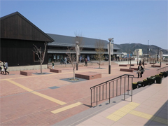

3.11を忘れない・・
みやぎ生協から被災地・宮城のいまをお伝えします
第45回 2017年5月5日
人口が減っても、経済が回り、選ばれる町を目指す
人口が集中する都市部。なかには被災した町を故郷に持つ人もいることでしょう。
震災後、沿岸部の町では数千人規模で住民が流出するなど急激な人口減少が進んでいます。被災市町にとって、復興の担い手となる住民の流出は大きな課題です。
女川町は震災前に約1万人だった人口が約6千7百人にまで減少しました。今後日本全体で人口減少が進むなかで、町は厳しい現実を冷静にとらえ、「人口減少下においても賑わいと活力を維持し続けられる町を目指す」ことを総合戦略（※）に掲げています。
そのような人口減少下について、「活動人口の創出」や「新産業の創出」で町と連携し、事業を進めているのがNPO法人アスヘノキボウです。アスヘノキボウの後藤大輝さんは「“活動人口の創出”は、外からビジネスや文化活動で入ってくる人を増やして町を盛り上げていこうとするまちづくり戦略。女川が縁で新しい関係が生まれ、女川に関わる人が増える。その環境をつくっていく」と話します。
例えば「お試し移住プログラム」は、5日間～30日間、女川のシェアハウスに滞在し、暮らしを体験するプログラムです。昨年度は学生、フリーランサー、会社員、経営者など88人の参加がありました。参加者は町の人と話し、一緒にご飯を食べ、日々復興していく様子を見ながら、長い時間を町で過ごします。「“自分の人生のなかでも、かなり濃い時間を過ごせた”と言って帰った人もいました」（後藤さん）。
また、「創業本気プログラム」からはすでにレストランや手造り石けん工房などの事業が道を拓いています。「地方で魅力的な仕事をつくる人を増やして、Iターン・Uターン者の流入を促したい」と後藤さん。「人口減少は日本全体で始まっている。人口が減ってもその地域の経済が回り、文化がつながっていくことが大事。女川町でそのモデルをつくることができれば」と将来に目を向けます。
人口減少は税収減や過疎化をもたらします。復興の苦労が続くなかで人の活力をどう生みだしていくか、被災した町それぞれが、厳しい現実と向き合いながら前を向いて歩んでいます。
※「女川町まち・ひと・しごと創生総合戦略」（平成28年7月策定）
 |
 |
| ｢女川町の魅力は人と自然の近さ｣と話す後藤大輝さん。アスヘノキボウが拠点をおく｢女川フューチャーセンターCamass｣はコワーキングスペースとして利用されています。 | 地元の人や観光客で賑わう物販飲食施設｢ハマテラス｣。昨年11月、女川駅前の商業エリアにオープンしました。 |
 前の記事 第44回「住民の自治で新しい故郷をつくる」（2017年4月5日）
前の記事 第44回「住民の自治で新しい故郷をつくる」（2017年4月5日）